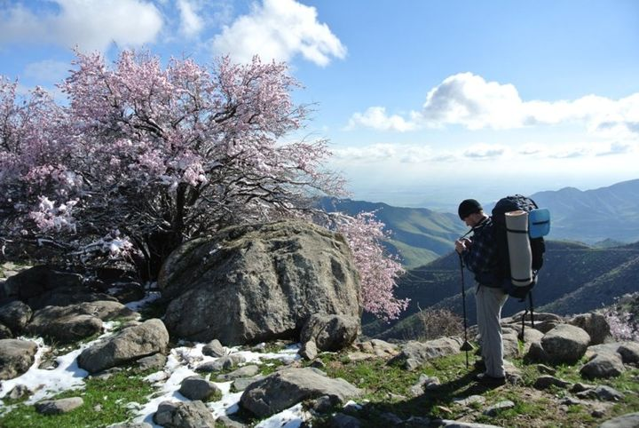

Mavuz:
Mintaqalarning turistik resurslari tasnifiMintaqaviy turizm resurslari resurslari, mohiyati, ahamiyati Hozirgi vaqtda ko‘pgina tarmoqlar kabi turizm industriyasi ham tez rivojlanib bormoqda. Turistik biznesni mavjud kapital, texnologiya, hamda malakali ishchi – xodimlar orqaligina shakllantirib bo‘lmaydi. Buning uchun birinchi navbatda turistik resurslarga ega bo‘lish lozim. Turistik resurslar deb – tabiiy, tarixiy, ijtimoiy – madaniy va boshqa turistlarni sayohatga qiziqtiradigan, insonning jismoniy, ruhiy va aqliy kuchini tiklashi va rivojlanishi ehtiyojlarini qondirishga qodir obektlarga aytiladi. Rekreatsiya faoliyati nuqtai nazardan turistik resurslarga tabiiy va antropogen geosistemalar kiradi, tabiat manzaralari, rekreatsiya faoliyati ehtiyoji qiymatiga va maishiy xususiyatga ega, insonlarni ko‘rsatilgan vaqtda ma’lum texnologiyalar yordamida sog‘ligini tiklash va dam olishida foydalanish mumkin bo‘lgan, rekreasiya faoliyati qobiliyatiga ega resurslar kiradi. Turistik resurslarning mohiyati shundan iboratki, ular turistik mahsulot shakllanishiga asos hisoblanadi. Umumiy qilib aytganda, aniq hududda turistik faoliyatda foydalanish mumkin bo‘lgan barcha obektlar kiradi. Turizmni rekreatsiyaning ko‘rinishi sifatida olsak, «turistik resurslar» tushunchasi «rekreatsiya resurslari» bilan birgalikda uyg‘unlashadi. Turistik resurslarning asosini rekreatsiya resurslari tashkil etadi. Rekreatsiya resurslari bu - turli komponentlar birikmasidan iborat, insonning dam olishi va davolanishi ehtiyojlarini qondirishda xizmat qiladigan vositalardir. Kelib chiqishi va foydalanish xususiyatlariga ko‘ra rekreatsion resurslar ikki guruhga ajratiladi: tabiiy va antropogen rekreatsion resurslar.
1. Tabiiy turistik resurslar, «turistik kapital potensiali» sifatida unga iqlim, havo, manzara, dengiz, ko‘l, daryolar, tog‘lar, o‘rmon va boshqalar kiradi. Boshqacha qilib aytganda, bu resurslarni tabiiy – iqlimiy resurslar deb atash mumkin.
2. Inson tomonidan yaratilgan turistik resurslar, ya’ni arxitektura binolari, yodgorliklar, madaniy obektlar va boshqalar. Bular ekskursiya obektlari hisoblanadi.
3. «Qo‘shimcha» turistik resurslar, inson mehnati tomonidan yaratilgan ma’lum mintaqadagi barcha turistlarni qabul qiluvchi va xizmat ko‘rsatuvchi korxonalar hisoblanadi. Bu resurslar orqali turistlarga xizmat ko‘rsatish darajasini baholash mumkin.